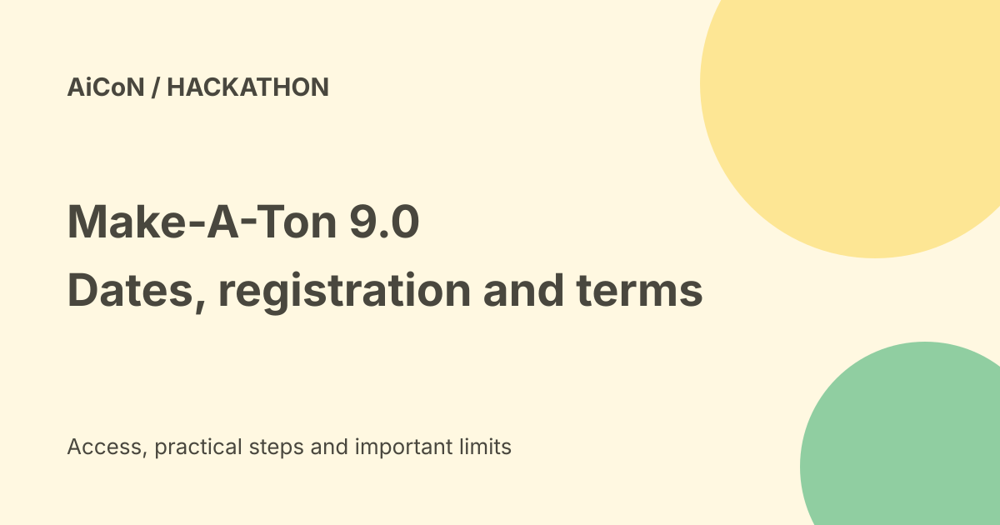

Make-A-Ton 9.0: Odoo x CUSAT dates, free registration and terms
Make-A-Ton 9.0 is an Odoo x CITTIC, CUSAT hiring hackathon. The current official portal lists free registration until 25 October 2026, an online round on 31 October and a Kochi final on 19-20 December. Hiring is a possibility, not a promised job.

Who can join?
The portal welcomes tech students, freshers and coding enthusiasts aged 18 or older. No prior hackathon experience is required. Teams can have one to four members and include people from different colleges or institutions. All programming languages are welcome.
The main Odoo x Make-A-Ton competition is different from HackForCUSAT, which is for CUSAT students only. Do not treat eligibility for one as eligibility for both.
Dates and the two timing layers
- Registration deadline: Sunday, 25 October 2026.
- Virtual round: Saturday, 31 October, 9am-5pm, an eight-hour challenge.
- Virtual results: Thursday, 19 November, by 7pm on the registration page.
- Final weekend: Saturday-Sunday, 19-20 December, at CUSAT in Kochi.
Odoo's event header lists 19 December 7am to 20 December 6pm, Asia/Kolkata. Its round description separately says a 24-hour coding final and problem release at 10am. Treat the header as the wider event window, not proof that coding lasts 35 hours. Confirm reporting and departure instructions in the organiser's final email before booking travel.
The Make-A-Ton timeline lists a 12-hour HackForCUSAT event on 18 December. Its dedicated section still says date, venue and prizes will be announced. That internal mismatch means those details need confirmation; this guide does not promise a settled separate-event schedule.
What teams build
Problem statements are surprises. The portal says online statements appear at 9am on 31 October and final statements at 10am on 19 December. The team leader chooses the statement. The participant document says a confirmed choice cannot be changed.
Odoo asks for a working solution using dynamic data, a clean responsive interface, input validation, clear navigation and proper Git use by every member. Backend APIs, data models and local databases are useful where relevant. It also advises understanding AI-generated code and preparing local or offline options rather than depending entirely on internet services.
A polished static mock-up is not the same as a working product. Use preparation time for tools, teamwork and practice, not a claim that the future surprise problem has been revealed.
Prizes and hiring
The published prizes total Rs1,05,000: Rs45,000 for the winner, Rs35,000 for first runner-up and Rs25,000 for second runner-up, plus Odoo goodies and certificates. The portal specifies participation certificates for top teams in the final round.
Exceptional performers may be offered fresher roles at Rs5-8 lakh annual CTC, subject to eligibility. Prior experience can affect an offer under company policy. CTC is the employer's stated annual package, not guaranteed take-home pay. Participation or winning does not guarantee an offer.
Registration steps to review
- Open the official Odoo event portal and read the terms.
- The leader selects one ticket for the team and enters member details.
- Members sign in with the same GitHub identity provided by the leader.
- Members complete required information and confirm participation.
- Check My Hackathons and the milestone instructions.
- The leader watches email for round instructions.
The official participant PDF also describes adding the assigned mentor to the project repository, joining the event update group, submitting the repository link and solution video, and checking results. Review access permissions before granting repository access. This article does not sign in, authorise an app or invite a mentor.
Costs, rights and restrictions
Registration is free and mandatory. No TA/DA or other allowance is provided. Registration for any Odoo hackathon prevents applying to other Odoo hackathons for the next three months under the portal's rule.
The organiser may accept or refuse registration. Participants agree to photographs and filming for communication material. Participants keep their intellectual-property rights but grant a non-exclusive licence to showcase and promote the project.
Negligent or improper use of provided equipment may create financial liability. The code of conduct applies, and jury decisions are final under the stated terms. Read the complete current terms before committing, especially if the project contains employer, client or teammate material.
Frequently asked questions
Can I enter alone?
The portal permits teams of one to four.
Do I get a job by registering?
No. Hiring depends on performance and eligibility.
Does free include travel?
No allowance is promised.
Did AiCoN register a team?
No. This is a researched guide, not a completed entry or verified admission.
What changed since the earlier post?
The two archive versions are merged. Current portal dates and prizes are retained, with separate event-versus-coding timing, the HackForCUSAT mismatch and participation terms added. Form availability after sign-in and acceptance of any particular team were not tested.
Sources: Official event portal and terms · Make-A-Ton website · Participant documentation. Checked 8 October 2026.